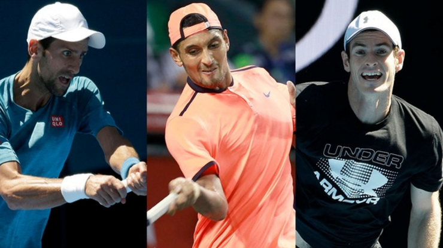
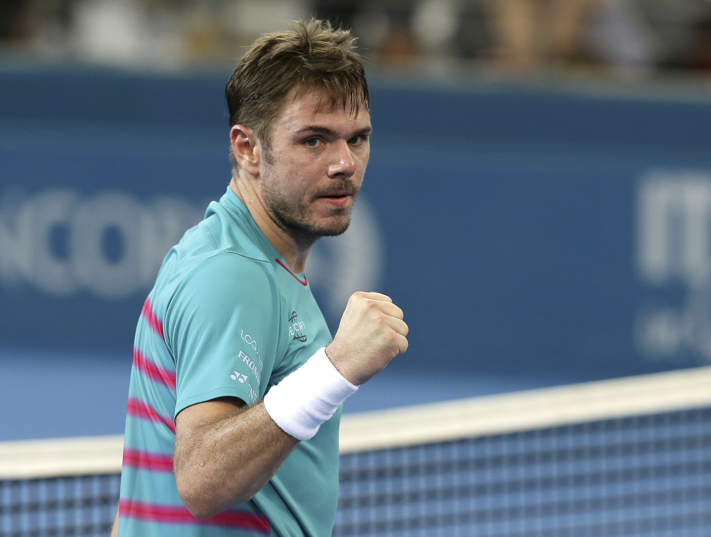
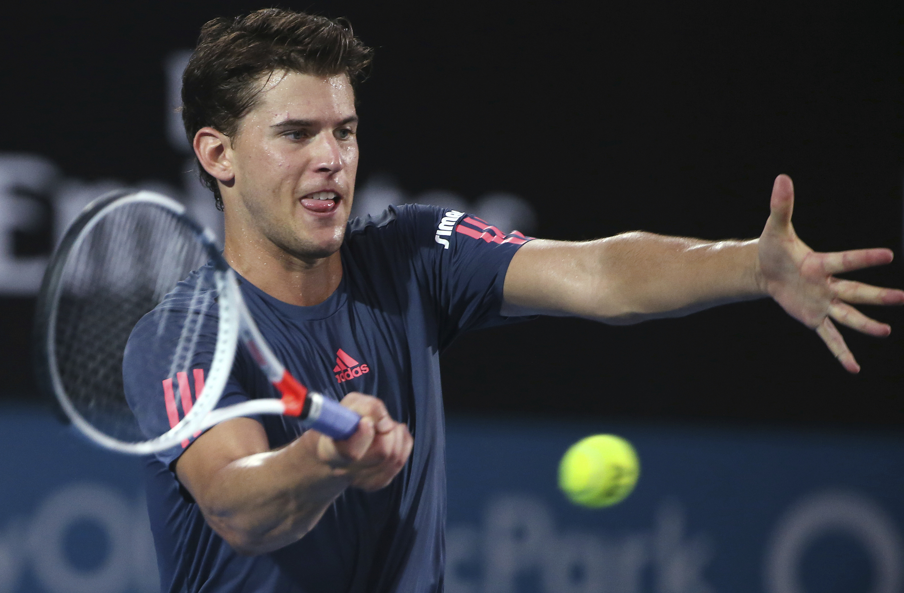

AUSTRALIAN OPEN MEN'S PREVIEW: WHO WILL EMERGE FROM THIS LOADED FIELD?

Scanning the Australian Open mens draw, the word that comes to mind is loaded. Every few inches, you come across a bold-faced name that could, in theory, have a chance to win the tournament.
There are the perennial finalists and top two seeds, Andy Murray and Novak Djokovic; there are the players who have made themselves into contenders in recent years, Stan Wawrinka, Milos Raonic, Kei Nishikori and Marin Cilic; there is a youth brigade led by Dominic Thiem, Nick Kyrgios, Alexander Zverev and Lucas Pouille; and there are those two blasts from the past, Roger Federer and Rafael Nadal, back again and seemingly at full strength.
There will be disappointing results from many of those players over the next two weeks, but for now everything i.e., everyone is a possibility.
*****
FIRST QUARTER
Murray, at 29, will begin as the No. 1 seed at a major for the first time. Will he feel like the favorite? While Melbourne has a slow hard courts which are to his liking, he has lost in the final five times here, four of which came against the No. 2 seed, Djokovic. In that sense, Murray must consider the Australian Open to be next on his list of career goals. He has a way of checking them off one by one over time.
Murray has a decent draw which looks manageable to start. He will open against hard hitting Ilya Marchenko. The first seed he could face is Sam Querrey, and the next highest seed in this quarter is a potentially banged up Nishikori.
But there is a wild card of sorts lurking in this bracket: Federer. The four time Aussie Open champ is seeded 17th. Like Murray, his draw looks smooth early his first two matches will come against qualifiers and then rough later. Federer might draw Tomas Berdych in the third round, a player who has beaten him six times in 22 meetings. After that, he is slated to play Nishikori in the fourth round and Murray in the quarters.
If they do meet, Murray Federer will be interesting and tough to predict. Murray last won their rivalry back in 2013 Aussie Open; since then, Federer has won five straight. Will he be ready, after half a year off, to make it six?
Also here: Lucas Pouille, John Isner
First-round match that will give you that 2010 feeling all over again: Nicolas Mahut vs. Ryan Harrison
Semifinalist: Murray
*****
SECOND QUARTER
With Wawrinka, Kyrgios, Jo-Wilfried Tsonga and Jack Sock leading the way, the hitting will be big and the matches potentially explosive in this section.
Wawrinka won this tournament in 2014 and is coming off another major victory at the U.S. Open, but that doesn’t mean we know what we are going to get from him over the next two weeks. He’ll start against Martin Klizan, but things will get tougher in all ways if he faces Kyrgios in the fourth round. Kyrgios beat him in their last meeting, in Madrid, but this one might come down to how the Aussie reacts to a night match in front of a home crowd. For a guy who, as we like to say, “loves the big stage,” Kyrgios hasn’t always reacted well to it Down Under.

Also here: Cilic and Bernard Tomic. They could meet in the third round.
Potential second-round match to watch: Sock vs. Karen Khachanov. This Russian-American face-off will be the Cold War ... of brutal topspin forehands.
Semifinalist: Kyrgios
*****
THIRD QUARTER
Raonic returns to the scene of his first 2016 breakthrough. Last year in Oz, he beat Wawrinka to reach the semifinals, and showed off a net game that few of us thought he had in him. This year Raonic will likely be disappointed with anything less than a semifinal run. The No. 3 seed opens against the unpredictable Dustin Brown, and he could face the always-tricky Gilles Simon soon after that. But Raonic has to like the fact that Gael Monfils is the second-highest seed in this section; the Canadian beat the Frenchman in three of their four meetings in 2016.
As in the top section, though, there’s a bold-faced name of note buried in this bracket: Nadal. Rafa has looked physically ready so far in 2017, and he’ll need to be: He could face Zverev in an explosive third-rounder. Rafa barely escaped the German teen last spring, and the kid has only gotten better since.
Young Americans to watch: Taylor Fritz, who plays Gilles Muller; Michael Mmoh, who plays Simon
First-round matches to watch: Monfils vs. occasional giant killer Jiri Vesely; Borna Coric vs. Alexandr Dolgopolov; Nadal vs. Florian Mayer. The German won their only meeting on hard courts, in Shanghai in 2011.
Semifinalist: Raonic
*****
FOURTH QUARTER
What could motivate one to want to win a tournament for a seventh time? Djokovic may have found the answer: Come in as the No. 2 seed. In his first tournament, in Doha, he looked ready to reclaim the No. 1 ranking from Murray. Now that he’s back on his favorite courts in Melbourne, can anything stand in his way?
You may have heard that Djokovic has received a “tough draw,” but with him that term is always relative. Yes, he opens against Fernando Verdasco, a former Australian Open semifinalist who upset Nadal in the first round here last year. And yes, Djokovic could face Grigor Dimitrov, who just beat three Top 10 players to win the title in Brisbane, in the third round. And yes, Thiem is in this section, too. But Djokovic’s career record against those three men is 19-5, and they’ve combined to beat him just once in the last seven years. So the “tough” in this case has earned its scare quotes.

Also here: David Goffin, Richard Gasquet
First-round match to watch: Benoit Paire vs. Tommy Haas